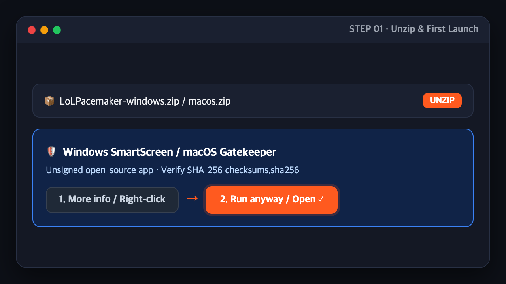
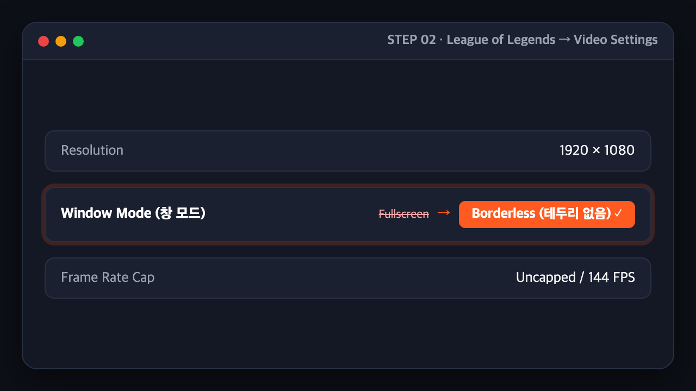
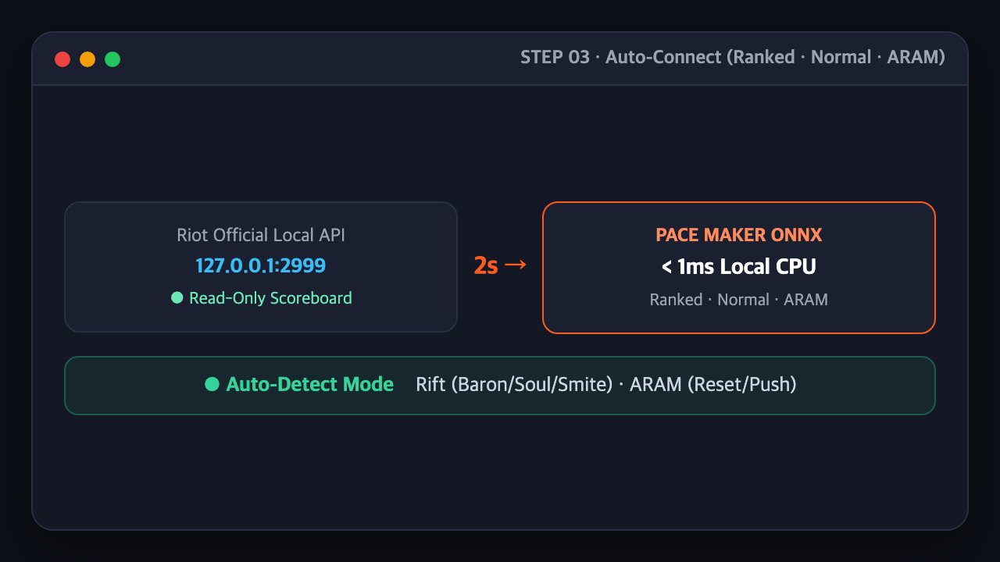
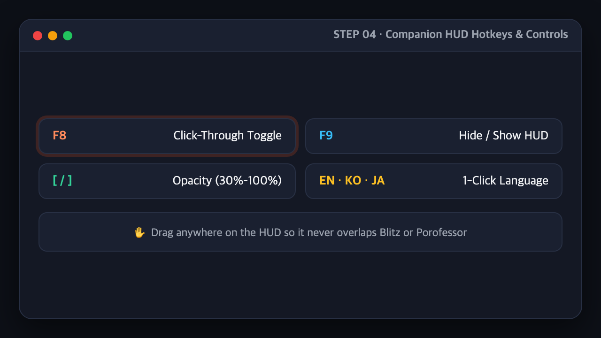

Your next winning move, on screen every 2 seconds.
Live win chance and the play to make now, right on top of your game. Ranked, Normal and ARAM.

Global Riot Match Lookup
KR · NA · EUW · JP · BR · LANHow to Apply (4 Simple Steps)
Windows · macOS
1-Click Install & Auto-Start
Run LoLPacemaker-Setup.exe once (or click AUTO on the HUD). It waits silently and pops up automatically when a LoL match starts.

Borderless Window
In League Video Settings, set Window Mode to Borderless so the transparent HUD floats cleanly over the game.

Auto-Connect (All Modes)
Start Ranked, Normal, ARAM, or Practice Tool. The HUD detects your mode automatically and updates every 2 seconds.

Companion Controls
Drag anywhere to avoid Blitz/Porofessor. F8 click-through, F9 hide/show, [ / ] opacity, and 1-click 5-language switch.
Troubleshooting & FAQ
The HUD does not appear on top of League of Legends.
Switch League's Video setting from Fullscreen to Borderless. Windows prevents any overlay from drawing above exclusive Fullscreen games.
Windows SmartScreen or macOS Gatekeeper shows a warning.
PACE MAKER is a free open-source project without a paid code-signing certificate. You can inspect 100% of the source code on GitHub and verify the SHA-256 hash before running.
It stays on "Waiting for LoL..." during a match.
The Riot local API (127.0.0.1:2999) opens only after the loading screen finishes and the match starts. Check that local firewall rules do not block loopback port 2999.
Is this safe under Riot Games Third-Party Policy (Ranked & ARAM)?
Yes. It reads only Riot's official local scoreboard/events API (127.0.0.1:2999) for player improvement coaching - zero memory reading, zero OCR, zero hidden enemy timers or wards.
Bug Reports & Feature Requests
Found a bug or want a new language/call? Open an issue directly on GitHub.
Community & Updates
Follow updates, share match feedback, and vote on upcoming coaching features on Reddit.
SHA-256 Integrity Checksums
Use this to check that the file you downloaded is the original.